Ne Zaman İcat Edildi?
Johann Gutenberg 1450 yılında Matbaa'yı buldu.

Galileo Galilei 1592 yılında Teleskop'u buldu.
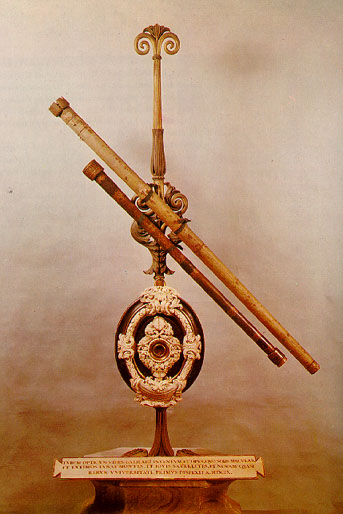
Blaise Pascal 1642 yılında ilk Toplama Makinesi'ni icat etti.
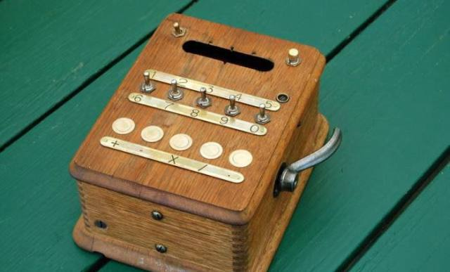
Montgolfier Kardeşler 1783 yılında Uçan Balon ile yolculuk yaptılar.
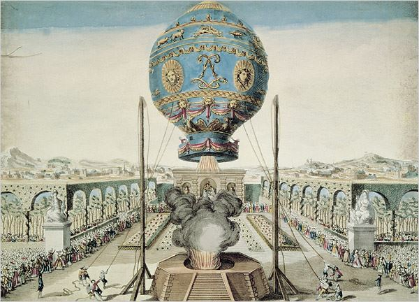
Richard Trevithick 1804 yılında Ray Üzerinde Gidebilen Lokomotif'i icat etti.

Rene Laennec 1816 yılında Stetoskop'u icat etti.
Elisha Graves Otis 1852 yılında Asansör'ü icat etti.
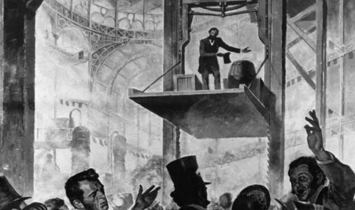
Christopher Latham Sholes 1867 yılında Daktilo'yu icat etti.
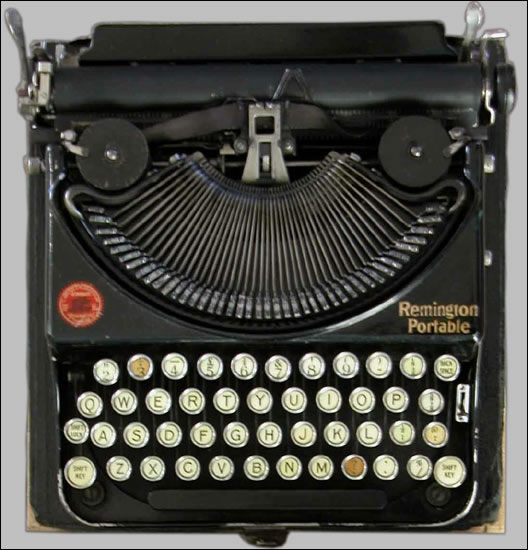
Dmitri Mendeleev 1869 yılında Periyodik Tablo'yu yayımladı.
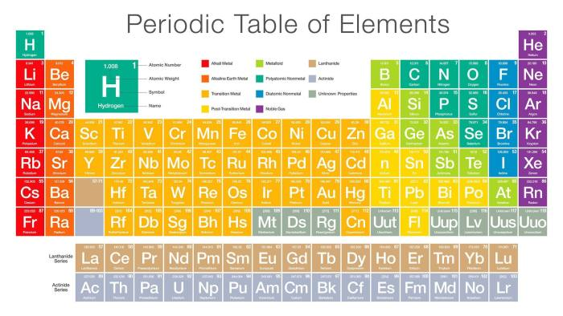
Alexander Graham Bell 1876 yılında Telefon'u icat etti.
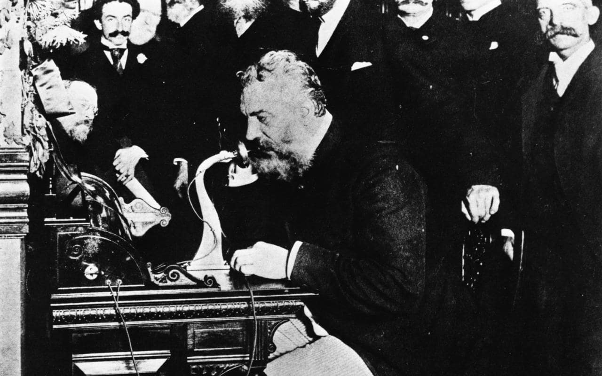
Guglielmo Marchese Marconi 1896 yılında Radyo Yayını gerçekleştirdi.
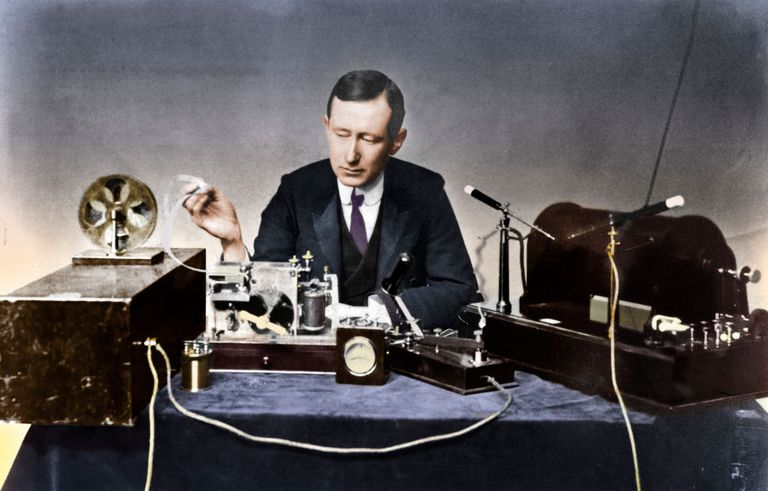
Hubert Cecil Booth 1901 yılında Elektrikli Süpürge'yi buldu.
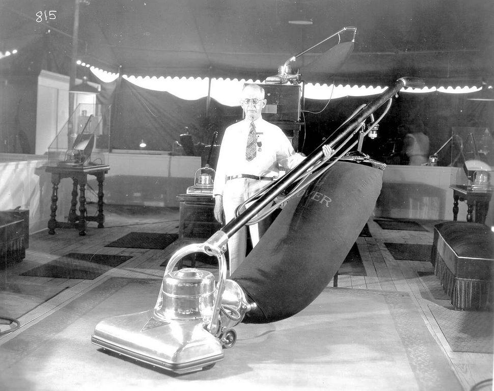
Arthur Korn 1922 yılında Faks'ı buldu.
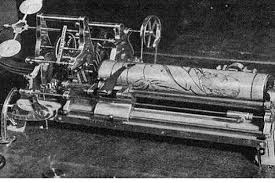
Platen ve Munters 1923 yılında Buzdolabı'nı buldu.
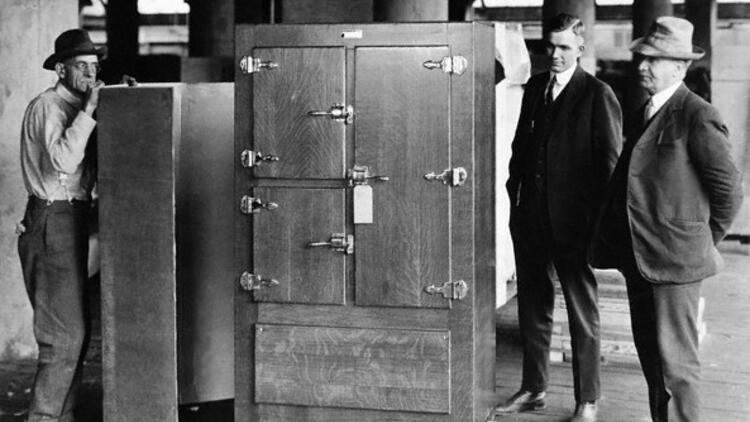
John Logie Baird 1926 yılında Televizyondan görüntü elde etti.
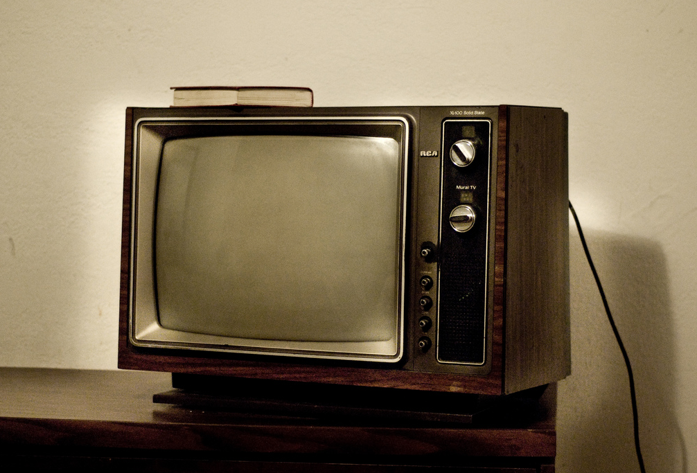
Alva John Fisher 1906 yılında Çamaşır Makinesi'ni buldu.
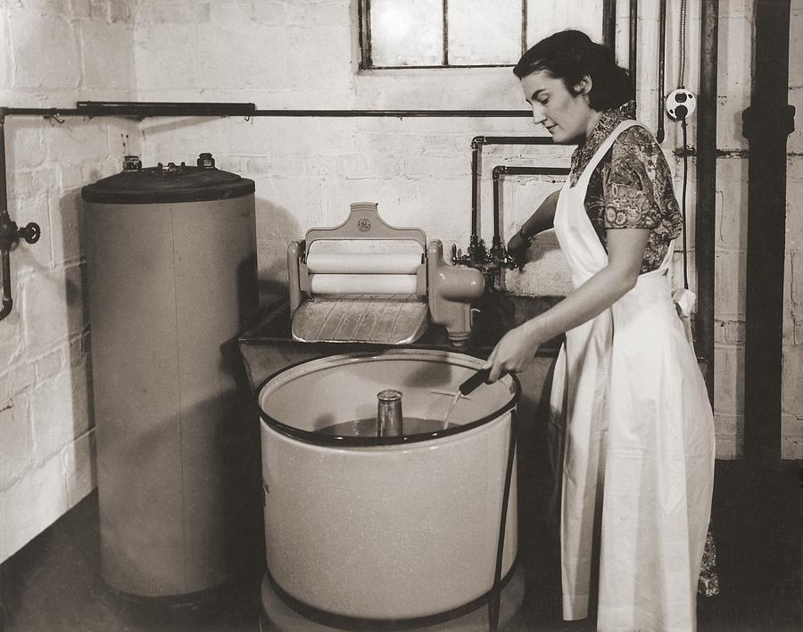
Salvino D'Armate 1280 yılında Gözlük'ü icat etti.
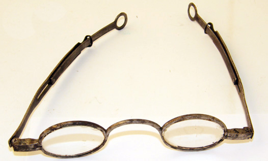
1991 yılında İnternet insanlığın kullanımına açıldı.
George Eastman 1888 yılında Fotoğraf Makinesi'ni yaptı.
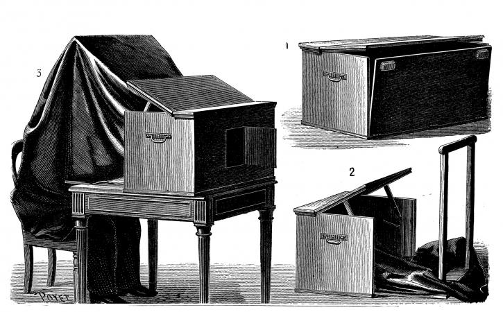
Jesse W. Reno 1894 yılında Yürüyen Merdiven'i tasarladı.
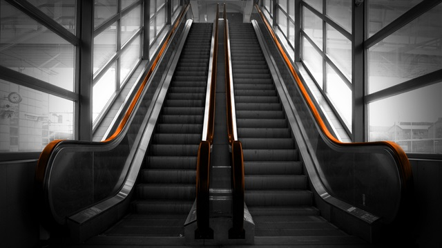